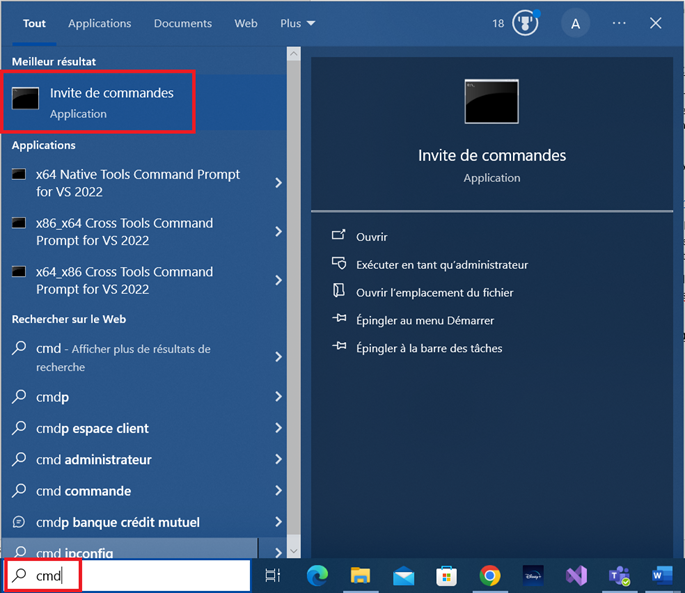
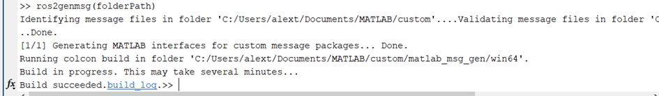
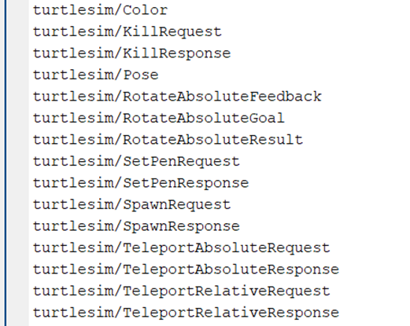

Tutoriel : Installation des prérequis à l'utilisation de Matlab avec ROS2
Table des matières
Introduction
L'objectif principal de ce guide consiste à vous guider à travers les étapes essentielles pour effectuer les installations requises en vue d'assurer le bon fonctionnement de Matlab en conjonction avec ROS2. Il est à noter que lors de nos essais avec Matlab R2023a, nous avons rencontré des difficultés et des échecs. Par conséquent, nous vous recommandons vivement d'opter pour la version R2023b de Matlab pour éviter ces problèmes.
Il convient de souligner que, bien que les Publishers puissent être utilisés sans avoir préalablement effectué ces installations, l'accès à des messages spécifiques et l'utilisation des Subscribers resteront restreints jusqu'à ce que vous ayez complété ce tutoriel. En conséquence, suivre scrupuleusement ces instructions vous permettra de profiter pleinement des fonctionnalités offertes par cette combinaison de logiciels.
Création de l'environnement virtuel Python
La première étape de la configuration des prérequis implique la création d'un environnement virtuel Python, crucial pour que Matlab puisse récupérer les messages via les Subscribers. Si toutefois vous rencontrez des problèmes liés à une bibliothèque ou à l'environnement Python lors de l'utilisation du Subscriber, il vous faudra reprendre cette étape.
Télécharger Python
-
Pour commencer, vous devrez installer la version 3.10.0rc2 de Python. Évitez de choisir les versions les plus récentes de Python, car cela posera des problèmes de compatibilité avec Matlab. Pour référence, veuillez noter que Matlab R2023b accepte au mieux la version 3.11 de Python, tandis que la ROS ToolBox est compatible avec la version 3.10 de Python au maximum.
Pour ce faire, vous pouvez télécharger le lanceur directement via le ce lien.
-
Une fois le téléchargement terminé, lancez le fichier pour procéder à l'installation de la version appropriée de Python. Astuce : Assurez-vous de noter le chemin d'accès choisi pour l'installation et, si possible, copiez-le pour faciliter les étapes suivantes.
-
Après avoir retenu le chemin d'accès pour l'installation de Python, ou si vous avez décidé de choisir vous-même l'emplacement d'installation, ouvrez une invite de commande Windows en saisissant « cmd » dans la barre de recherche :

Créer l'environnement virtuel Python
-
Procédez à la création d'un environnement virtuel selon la syntaxe suivante :
[Chemin vers le repertoire d'installation de Python]\python -m venv [Chemin vers le dossier destiné à votre environnement virtuel]\[Nom de votre environnement virtuel]
Par exemple, si vous exécutez Python depuis le dossier D:\Python, cette commande aboutira à la création d'un environnement virtuel Python dans un répertoire spécifique tel que D:\py38 :

Indiquer l'environnement virtuel Python à Matlab et à la ROS Toolbox
La prochaine étape implique d'indiquer à Matlab le répertoire où il devra localiser les bibliothèques Python.
-
Pour ce faire, accédez à la section "Environnement" puis cliquez sur "Préférences" :

-
Rendez-vous dans l'onglet "ROS toolbox" et sélectionnez "Ouvrir les préférences de ROS toolbox" :

-
Utilisez le bouton "Browse..." pour accéder au dossier d'installation de Python et sélectionnez le fichier exécutable Python. Enfin, confirmez en appuyant sur "Ouvrir" une fois que le fichier est sélectionné, puis sur "OK" pour valider les changements :

-
Pour permettre à Matlab d'accéder à cet environnement, exécutez la commande suivante :
pyenv('Version', '[Chemin vers le dossier contenant l'environnement virtuel]\textbackslash Scripts\textbackslash python', 'ExecutionMode', 'OutOfProcess')En suivant l'exemple précédent, vous pouvez constater que la version de Python est correcte, que la bibliothèque est située au bon endroit, et que l'exécutable utilisé par Matlab provient de l'environnement virtuel. Après cette étape, il est crucial de redémarrer votre ordinateur. Ignorer ce redémarrage pourrait entraîner des problèmes de bibliothèque tout au long de la suite du tutoriel.
Ajout des messages turtlesim dans la bibliothèque Matlab
Maintenant que nous avons établi l'accès de Matlab à Python, nous allons explorer la manière d'ajouter des messages dans la bibliothèque Matlab, en nous concentrant spécifiquement sur les messages turtlesim.
Télécharger le package turtlesim depuis Github
-
Nous commencerons par installer le package turtlesim sur notre système. Vous pouvez le trouver dans le Github ros\_tutorials de ROS à l'adresse suivante : https://github.com/ros/ros\_tutorials
-
Une fois le dossier compressé téléchargé, extrayez les fichiers et sélectionnez la partie pertinente, à savoir le dossier « turtlesim ». Ensuite, placez ce dossier « turtlesim » dans un nouveau dossier nommé « msgs », que vous placerez dans le répertoire actif de Matlab. Vous aurez alors la configuration suivante :

Utiliser le répertoire msgs pour créer le répertoire custom
Nous allons ensuite demander à Matlab de créer un nouveau répertoire dans lequel il pourra stocker les différents packages.
-
Utilisez les deux commandes suivantes :

-
On a alors ceci :

Construire les packages python des différents messages
Après avoir terminé l'étape précédente, nous pouvons désormais procéder à la construction des packages pour les différents types de messages. À cet effet, nous ferons appel à la fonction "ros2genmsg()" de Matlab. Cette fonction utilise le constructeur colcon pour construire les différents packages, permettant ainsi à Matlab de les utiliser en tant que messages pour ROS2.
-
Vous pouvez employer la commande suivante pour ce faire :
 -
Une fois cette étape réalisée, si vous entrez la commande suivante :

-
Vous devriez pouvoir visualiser les messages turtlesim ci-dessous :

En suivant ces instructions pas à pas, vous devriez maintenant être en mesure de gérer efficacement les messages et les packages, notamment ceux liés à turtlesim. Assurez-vous de respecter les étapes de configuration recommandées afin de maximiser l'efficacité et la compatibilité de votre environnement de développement.
N'hésitez pas à explorer davantage les fonctionnalités offertes par cette synergie entre Matlab et ROS2 pour tirer pleinement parti de leurs capacités combinées dans vos projets futurs. Si vous rencontrez des difficultés ou avez des questions, n'hésitez pas à vous référer à la documentation complémentaire ou à la communauté pour obtenir de l'aide.